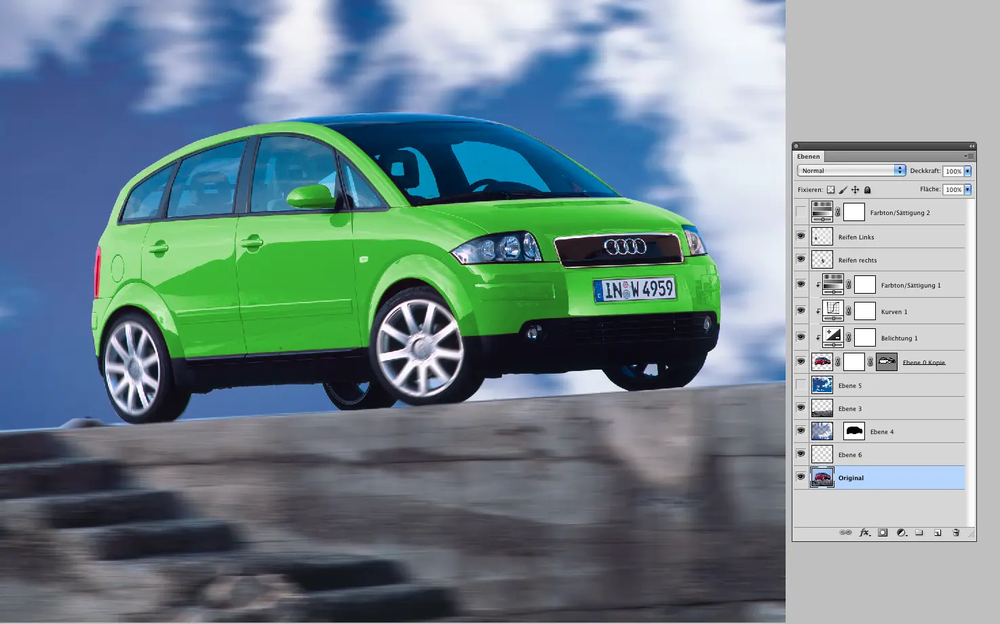

Fotografien
Identität durch Licht.
Ich halte Momente, Produkte und Orte mit einem Gespür für Licht, Komposition und Details fest. Mein Fokus liegt auf authentischen Fotografien, die Emotionen wecken, Geschichten erzählen und durch ihre klare Bildsprache nachhaltig wirken.
Ausgewählte Arbeiten
Fotografie, Retusche, Composing und Restauration – nach Projekten sortiert.
Licht & Schatten
Lichtsetzungen im direkten Vergleich
2 Vergleiche
Licht & Schatten
Lichtsetzungen im direkten Vergleich


Retusche & Bildbearbeitung
Vorher-Nachher-Ergebnisse von Porträt-, Fahrzeug- und Szenenbearbeitungen
3 Vergleiche
Retusche & Bildbearbeitung
Vorher-Nachher-Ergebnisse von Porträt-, Fahrzeug- und Szenenbearbeitungen


Restauration & Composing
Bildrestauration und digitale Bildkomposition im Vergleich
3 Vergleiche
Restauration & Composing
Bildrestauration und digitale Bildkomposition im Vergleich


Weitere Bildbearbeitungen
Retusche, Fashion und Composing-Arbeiten
8 Motive
Weitere Bildbearbeitungen
Retusche, Fashion und Composing-Arbeiten



Blauer Kran – Hamburg
Architektur, Perspektive und industrielle Details
4 Motive
Blauer Kran – Hamburg
Architektur, Perspektive und industrielle Details


Dom – Hoch hinaus
Perspektiven und Eindrücke vom Hamburger Dom
4 Motive
Dom – Hoch hinaus
Perspektiven und Eindrücke vom Hamburger Dom


Elmshorn – Teppich Kibek
Architekturfotografie und urbane Eindrücke
4 Motive
Elmshorn – Teppich Kibek
Architekturfotografie und urbane Eindrücke


Wirelane
Fotografische Einblicke und Details
4 Motive
Wirelane
Fotografische Einblicke und Details